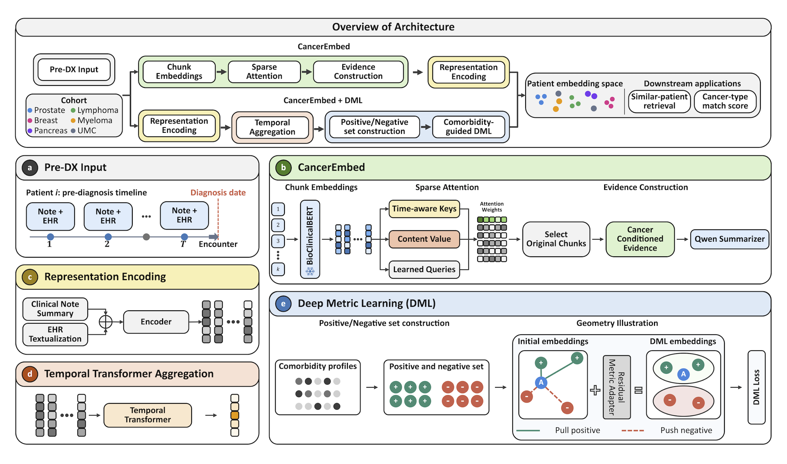
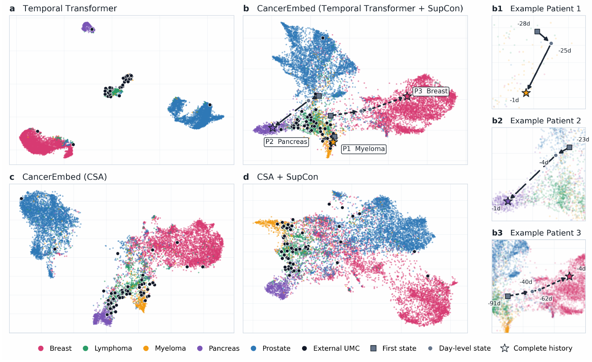
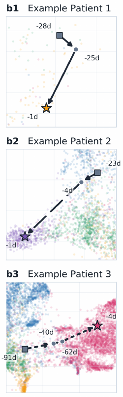
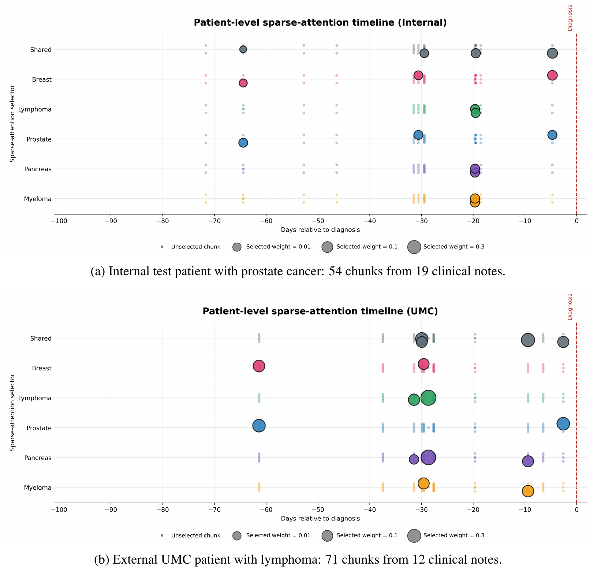
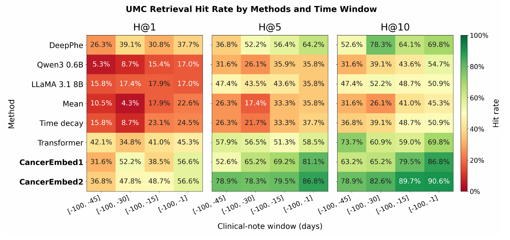
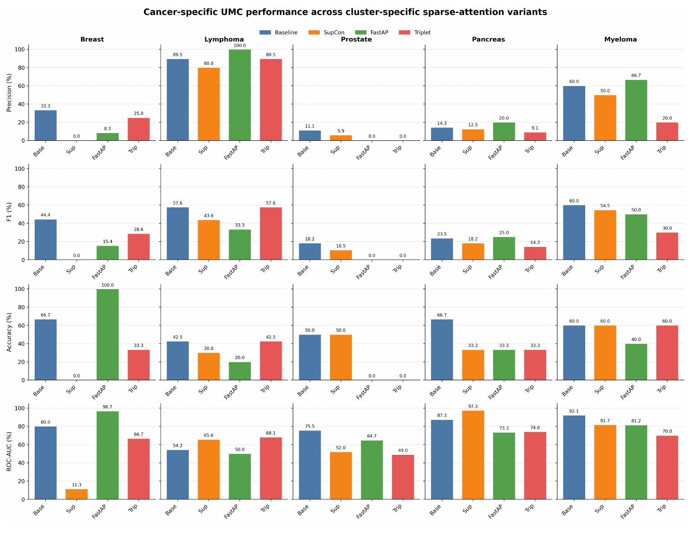

+28.3 percentage points over the temporal Transformer without DML.
CLINICAL REPRESENTATION LEARNING
Learning temporal
patient representations
with comorbidity-guided geometry.
CancerEmbed formulates cancer primary-site identification as trajectory-aware patient retrieval. Explore two complementary pathways that organize pre-diagnosis clinical evidence into patient neighborhoods, evaluated across five cancer types and an independent Unidentified Mass Clinic (UMC) cohort.
53External UMC queries
2,286Internal reserve queries
4Pre-diagnosis time windows
2Downstream evaluation tasks
KEY FINDINGS / EXTERNAL UMC
Transfer beyond the training cohort.
+15.1 percentage points in mean same-cancer precision among the top five.
Complementary evidence-selection pathway using full notes, reported without structured EHR at inference.
External cohort: 53 patients. Temporal Transformer + SupCon also reaches 64.2% classification accuracy and 45.4% macro-F1 (Table 1).
01 / THE METHOD
A connected view of the architecture.
Two complementary representation pathways, each evaluated independently, connect pre-diagnosis evidence with patient similarity.

Cancer-specific evidence from full notes
Full notes → chunk embeddings → shared & cancer-specific sparse attention → cited evidence summaries → patient representations
Frozen BioClinicalBERT encodes chunks. Shared and cancer-specific queries select up to four chunks each; Qwen summarizes the selected evidence with source-chunk citations. All five cancer branches are evaluated without requiring the query cancer label at inference.
Method §3.1 ↗Trajectory-aware representations
Encounter summaries + textualized EHR → MedEmbed → diagnosis-relative temporal Transformer → comorbidity-guided residual adapter
The temporal model aggregates irregular encounters within the 100 days preceding diagnosis. SupCon refines the frozen representation using relations derived from pre-diagnosis comorbidities and demographics.
Method §3.2 ↗Training, inference, and configuration details
Pre-diagnosis inputs: the diagnosis day is excluded. Post-diagnosis representations are auxiliary temporal-model training targets only; they are never temporal-model inputs. The auxiliary prediction heads are discarded after training.
Different supervision at different stages: cancer labels supervise the temporal classifier and CSA selector. DML positive and negative relations use comorbidity profiles and demographics, with Jaccard thresholds ≥0.45 and ≤0.25; intermediate pairs are excluded.
CSA configuration clarification: the abstract and results describe CSA without structured EHR at inference, while §3.1 also describes concatenating structured context with evidence summaries. This site reports the final table values and flags this difference pending author clarification.
02 / STUDY DESIGN
Understand what is being evaluated.
Keep the evaluation cohort and available evidence visible when interpreting a result.
Internal → external
The internal cohort contains 11,440 patients: 7,992 training, 1,162 validation, and 2,286 test patients. The 53-patient external UMC cohort is locked and excluded from training, tuning, and checkpoint selection. Internal retrieval uses a 9,154-patient gallery; external retrieval uses all 11,440 internal patients (§4.1–4.2).
Before diagnosis
Inputs come from the 100 days preceding diagnosis, excluding diagnosis day. Time-window analyses use cumulative note histories; patients without available notes are censored for that window. The cutoff is diagnosis-relative in this retrospective evaluation.
A substantial shift in cancer prevalence
Dataset §4.1 ↗Internal full cohort · n = 11,440
External UMC · n = 53
Lymphoma accounts for 40 of 53 external cases (75.5%), compared with 881 of 11,440 internal patients (7.7%). Show macro-averaged metrics alongside accuracy when interpreting this imbalance.
How early can retrieval work?
Cumulative windows start at day −100−45 days19 patients[−100, −45]
−30 days23 patients[−100, −30]
−15 days39 patients[−100, −15]
−1 day53 patients[−100, −1]
These are per-window denominators. Fixed-cohort longitudinal comparisons use the same 19 earliest-window patients throughout. The result explorer below displays manuscript tables, not time-window curves.
03 / QUANTITATIVE EVIDENCE
Explore the study results.
Explore the final paper’s main comparisons (Tables 1–2) and DML objective ablations (Table 3). Every displayed value comes from the final PDF.
Loading manuscript results…
Method comparison
HIGHER IS BETTERInspect the complete results table
04 / TRAJECTORIES & EVIDENCE
See how the representation changes.
Published visualizations connect aggregate performance with embedding geometry, accumulating evidence, and sparse evidence selection.
BreastLymphomaProstatePancreasMyelomaExternal UMC

UMAP can distort distances and neighborhoods. Interpret these projections qualitatively alongside the quantitative results; apparent separation is not a performance metric.
Patient trajectories toward diagnosis
The paper follows three held-out patients: myeloma, pancreas, and breast. As notes accumulate, their representations move toward their eventual cancer-associated regions.

Figure 2 b1–b3 · §4.3. These are selected qualitative examples.
SupCon has different effects across pathways
For the temporal Transformer, SupCon improves external hit rate and neighborhood precision. For CSA, H@5 falls from 81.1% to 73.6%, while P@5 increases from 53.6% to 55.5%.
Temporal H@558.5 → 86.8%
CSA H@581.1 → 73.6%
Temporal P@546.0 → 61.1%
CSA P@553.6 → 55.5%
Metric-learning gains depend on the starting representation. The ablation view above compares SupCon with Triplet and FastAP.
Ablation §4.4 · Table 3 ↗Which evidence reaches the summarizer?

- Select source chunksShared and hypothesis-specific sparse attention selects dated clinical text.
- Summarize with citationsQwen receives raw text, dates, and opaque chunk IDs; cancer labels and attention weights are excluded.
- Encode the evidence viewSupported findings, negation, uncertainty, and timing are preserved for the representation.
Source: §3.1 and Appendix A, Figure 4. The published timeline illustrates selection; underlying clinical chunk text and generated summaries are not included here.

Per-window available sample sizes are 19, 23, 39, and 53 (evaluation artifact README). Changing denominators mean these cells are not a fixed-patient longitudinal comparison.
Inspect per-cancer classification results · Figure 5

Published CSA subgroup comparisons from Appendix B, page 14. External class counts are breast 3, lymphoma 40, prostate 2, pancreas 3, and myeloma 5. Small subgroup sizes limit interpretation.
RETRIEVAL APP / INTERFACE PREVIEW
Explore the patient retrieval workflow.
Select an illustrative case, compare retrieval methods, and inspect ranked matches and supporting summaries.
Adapted from the UMC retrieval app interface.Open full-size preview ↗